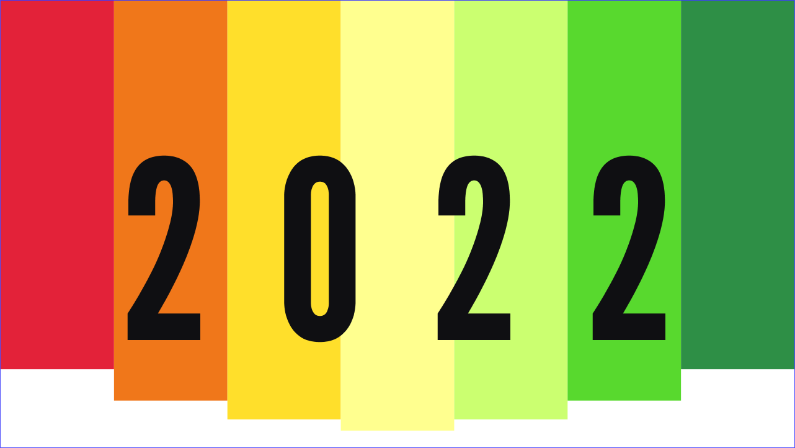
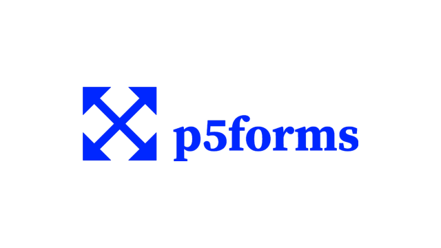

MusicDJ
A music editor inspired by one that could be found on many old Sony Ericsson feature phones.

New Year's Eve countdown
A configurable New Year's Eve coutdown animation made in Processing and C#.

p5forms
A GUI library for p5.js – create and manage windows and controls.